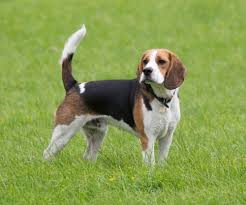

About Bella
Bella is a sweet, curious Beagle who loves following her nose. She's great with children and has a gentle disposition. Bella enjoys sniffing adventures, cuddling, and food puzzles. She can be vocal when she catches an interesting scent!
Personality
- Friendly
- Curious
- Gentle
- Food-motivated
- Good-natured
Health
- Vaccinated
- Spayed
- Microchipped
- Needs weight management
Preferences
- Loves scent games
- Enjoys family time
- Good with kids
- Likes other dogs
Requirements
- Secure fencing (escap artist)
- Monitor food intake
- Regular exercise
- Would do well in most homes
Bella's Story
Bella was surrendered when her family moved to an apartment that didn't allow pets. She's been with us for 6 weeks and has charmed all our volunteers. Bella is house-trained and knows basic commands. She would thrive in a home where she can use her nose and be part of family activities.
Start Adoption Application